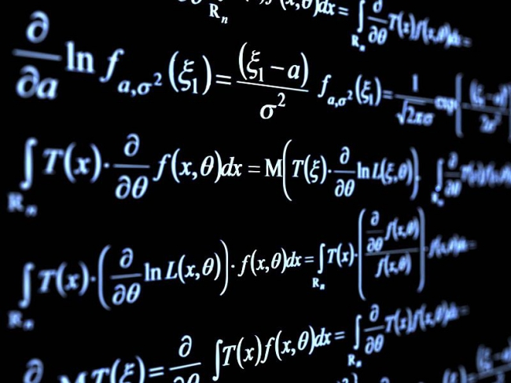
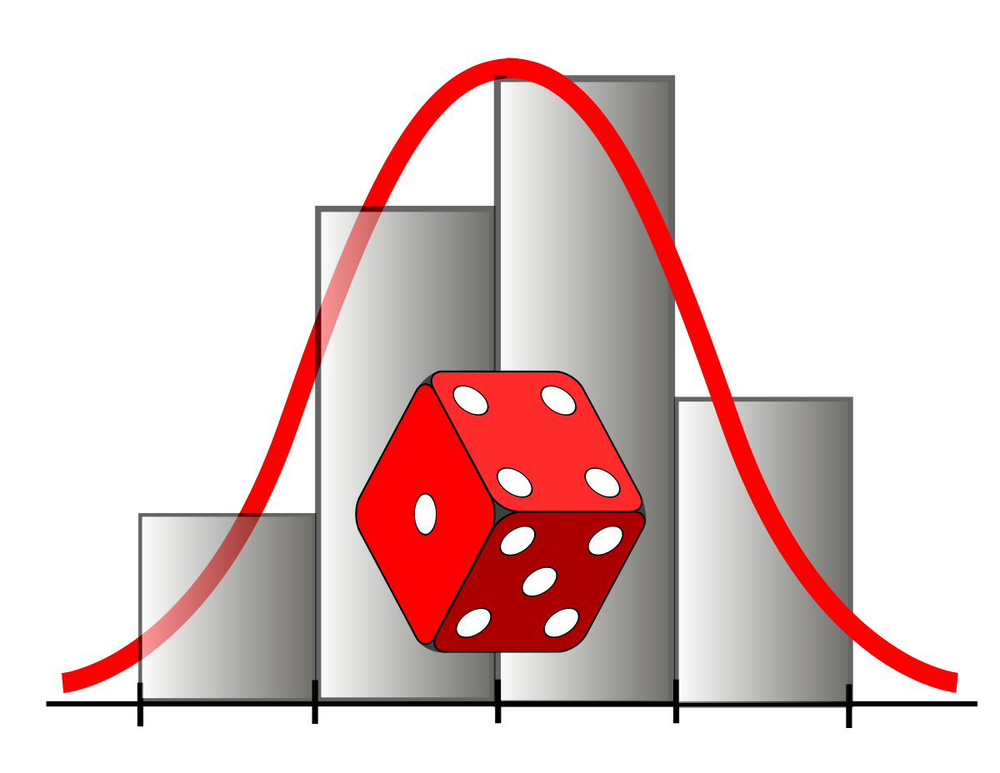

Портал научно популярной тематики
Портал научно популярной тематики

Теория вероятностей – это раздел математики, изучающий закономерности случайных явлений: случайные события, случайные величины, их свойства и операции над ними.
Долгое время теория вероятностей не имела четкого определения. Оно было сформулировано лишь в 1929 году. Возникновение теории вероятностей как науки относят к средним векам и первым попыткам математического анализа азартных игр (орлянка, кости, рулетка). Французские математики XVII века Блез Паскаль и Пьер Ферма, исследуя прогнозирование выигрыша в азартных играх, открыли первые вероятностные закономерности, возникающие при бросании костей.
Теория вероятности возникла как наука из убеждения, что в основе массовых случайных событий лежат определенные закономерности. Теория вероятности изучает данные закономерности.
Теория вероятностей занимается изучением событий, наступление которых достоверно неизвестно. Она позволяет судить о степени вероятности наступления одних событий по сравнению с другими.

Например: определить однозначно результат выпадения «орла» или «решки» в результате подбрасывания монеты нельзя, но при многократном подбрасывании выпадает примерно одинаковое число «орлов» и «решек», что означает, что вероятность того, что выпадет «орел» или «решка», равна 50%.
Испытанием в этом случае называется реализация определенного комплекса условий, то есть в данном случае подбрасывание монеты. Испытание может воспроизводиться неограниченное количество раз. При этом комплекс условий включает в себя случайные факторы.
Существуют основные понятия теории. Вероятность — степень возможности происхождения события. Когда основания для того, чтобы какое-нибудь возможное событие произошло в действительности, перевешивают противоположные основания, то это событие называют вероятным, в противном случае — маловероятным или невероятным.
Случайная величина — это величина, которая в результате испытания может принять то или иное значение, причем неизвестно заранее, какое именно. Например: число на пожарную станцию за сутки, число попадания при 10 выстрелах и т.д.
Материал взят из Wikipedia
© 2020-2021 Сандибек Нурхадис, по всем вопросам пишите по адресу nurkhadissandibek@gmail.com